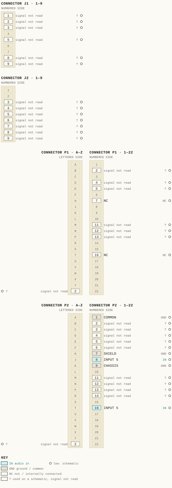
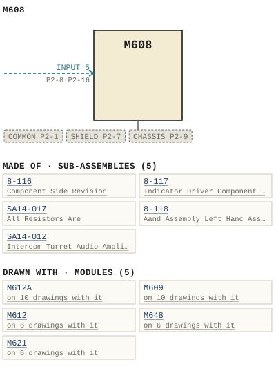

M608
| Type | module |
| Category | AMPLIFIERS |
| Try it | simulator & front panel · download package (zip) |
| Earliest dated evidence | 1975|8 — month & year |
| Evidence | "Sep-75" in PUBLIC/Manuals + tech DOCUMENTS/Modules/M608 - Audio DA.pdf |
| Confidence | medium |
| All years found | 1975|8, 1980|13 |
| Folder | DOCUMENTS/Internal and Eng Notes and drawings/Quotations brochures and misc papers |
| Folder | DOCUMENTS/RAW SCANS/history - RAW IMAGES |
| Folder | DOCUMENTS/RECENT SCANS/WBSps.ca 20210317 - Small 11X17 drawings |
Connections and circuit (ideal SPICE model)
Inputs, outputs, power and control as its own documents name them (no RTO-144 sheet for it: pin numbers only where the page gives them). Run the generator, turn the gain, watch the VU.
Pictures


M608.pinout.svg

M608.connections.svg 1980 - M608 - P002.jpg
1980 - M608 - P002.jpg 19xx - M608 - AD - WBSPS - AD - for the engineer who has everything.jpg
19xx - M608 - AD - WBSPS - AD - for the engineer who has everything.jpg 1975 - M608 - 14-017-06-001 - ALL RESISTORS ARE.jpg
1975 - M608 - 14-017-06-001 - ALL RESISTORS ARE.jpg 1975 - M608 - 14-017-06-001.jpg
1975 - M608 - 14-017-06-001.jpg 1975 - M608 - 608-01-001 - AUDIO DISTRIBUTION AMPLIFIER.jpg
1975 - M608 - 608-01-001 - AUDIO DISTRIBUTION AMPLIFIER.jpg 1975 - M608 - 608-01-001 - BIE OUT.jpg
1975 - M608 - 608-01-001 - BIE OUT.jpg 1975 - M608 - 608-02-001 - ALL CAPACITCRSARE INAF UNLESS CTHERWSE SPECIFIED.jpg
1975 - M608 - 608-02-001 - ALL CAPACITCRSARE INAF UNLESS CTHERWSE SPECIFIED.jpg 1975 - M608 - 608-02-001 - OVLD NORM.jpg
1975 - M608 - 608-02-001 - OVLD NORM.jpg 1975 - M608 - 608-02-003 - AUDIO DISTRIBUTION AMPLIFIER.jpg
1975 - M608 - 608-02-003 - AUDIO DISTRIBUTION AMPLIFIER.jpg 1975 - M608 - 608-02-003 - STATION TECHNICAL GROUND INSULATED GROUND BAR.jpg
1975 - M608 - 608-02-003 - STATION TECHNICAL GROUND INSULATED GROUND BAR.jpg 1975 - M608 - 608-04-001 - AUDIO DISTRIBUTION AMPLIFIER.jpg
1975 - M608 - 608-04-001 - AUDIO DISTRIBUTION AMPLIFIER.jpg 1975 - M608 - 608-04-001 - CONNECT OUTPUT CAELE SHIELDS CHASSIS MODULE.jpg
1975 - M608 - 608-04-001 - CONNECT OUTPUT CAELE SHIELDS CHASSIS MODULE.jpg 1975 - M608 - 608-06-001 - AUDIO DISTRIBUTION AMPLIFIER COMPONENT LAYOUT.jpg
1975 - M608 - 608-06-001 - AUDIO DISTRIBUTION AMPLIFIER COMPONENT LAYOUT.jpg 1975 - M608 - 608-06-001 - AUDIO DISTRIBUTION AMPLIFIER COMPONENT LAYOUT.png
1975 - M608 - 608-06-001 - AUDIO DISTRIBUTION AMPLIFIER COMPONENT LAYOUT.png 1975 - M608 - 608-06-002 - AUDIO DISTRIBUTION AMPLIFIER.jpg
1975 - M608 - 608-06-002 - AUDIO DISTRIBUTION AMPLIFIER.jpg 1975 - M608 - 608-06-002.jpg
1975 - M608 - 608-06-002.jpg 1975 - M608 - 8-116-06-001 - COMPONENT SIDE OFF SET OFF SET.jpg
1975 - M608 - 8-116-06-001 - COMPONENT SIDE OFF SET OFF SET.jpg 1975 - M608 - 8-116-06-001 - HEAT SINK FOR.jpg
1975 - M608 - 8-116-06-001 - HEAT SINK FOR.jpg 1975 - M608 - 8-117-06-001.jpg
1975 - M608 - 8-117-06-001.jpg 1975 - M608 - P001 - Title Page.jpg
1975 - M608 - P001 - Title Page.jpg 1975 - M608 - P003 - 1-1.jpg
1975 - M608 - P003 - 1-1.jpg 1975 - M608 - P004 - 1-2.jpg
1975 - M608 - P004 - 1-2.jpg 1975 - M608 - P005 - 2-1.jpg
1975 - M608 - P005 - 2-1.jpg 1975 - M608 - P006 - 2-2.jpg
1975 - M608 - P006 - 2-2.jpg 1975 - M608 - P007 - 2-3.jpg
1975 - M608 - P007 - 2-3.jpg 1975 - M608 - P008 - 3-1.jpg
1975 - M608 - P008 - 3-1.jpg 1975 - M608 - P009 - 4-1.jpg
1975 - M608 - P009 - 4-1.jpg 1975 - M608 - P010 - 4-2.jpg
1975 - M608 - P010 - 4-2.jpg 1975 - M608 - P011 - 4-3.jpg
1975 - M608 - P011 - 4-3.jpg 1975 - M608 - P012 - 4-4.jpg
1975 - M608 - P012 - 4-4.jpg 1975 - M608 - P013 - 4-5.jpg
1975 - M608 - P013 - 4-5.jpg 1975 - M608 - WBS test procedures 0.jpeg
1975 - M608 - WBS test procedures 0.jpeg 1975 - M608 - WBS test procedures 1.jpeg
1975 - M608 - WBS test procedures 1.jpeg 1975 - M608 - WBS test procedures 2.jpeg
1975 - M608 - WBS test procedures 2.jpeg 1975 - M608 - WBS test procedures 3.jpeg
1975 - M608 - WBS test procedures 3.jpeg 1975 - M608 - WBS test procedures 4.jpeg
1975 - M608 - WBS test procedures 4.jpeg 1980 - 608-02-003 - M608A AUDIO DISTRIBUTION AMPLIFIER SYSTEM WIRING SCHEMATIC - DRN P. MAHONEY - ENG MRW - ISS 1.png
1980 - 608-02-003 - M608A AUDIO DISTRIBUTION AMPLIFIER SYSTEM WIRING SCHEMATIC - DRN P. MAHONEY - ENG MRW - ISS 1.png 1980 - 608-04-001 - (cut off; connector wiring diagram, P1 P2, 'CT M608' note) - DRN D. Mahoney - ENG MRW - ISS 2.jpg
1980 - 608-04-001 - (cut off; connector wiring diagram, P1 P2, 'CT M608' note) - DRN D. Mahoney - ENG MRW - ISS 2.jpg 1980 - 608-04-001 - AUDIO DISTRIBUTION AMPLIFIER REAR CONNECTOR LAYOUT - DRN P. Mahoney - ENG MRW - ISS 2.jpg
1980 - 608-04-001 - AUDIO DISTRIBUTION AMPLIFIER REAR CONNECTOR LAYOUT - DRN P. Mahoney - ENG MRW - ISS 2.jpg 1980 - 608-06-001 - M608A AUDIO DISTRIBUTION AMPLIFIER COMPONENT LAYOUT - DRN P. Mahoney - ENG MRW - ISS 2.jpg
1980 - 608-06-001 - M608A AUDIO DISTRIBUTION AMPLIFIER COMPONENT LAYOUT - DRN P. Mahoney - ENG MRW - ISS 2.jpg 19xx - DOC - US Sales Brochure pg 11.jpg
19xx - DOC - US Sales Brochure pg 11.jpg 19xx - DOC - US Sales Brochure pg 25.jpg
19xx - DOC - US Sales Brochure pg 25.jpg 19xx - DOC - WBSPS - AD - for the engineer who has everything.jpg
19xx - DOC - WBSPS - AD - for the engineer who has everything.jpg 19xx - DOC - 608-02-003 - TECHNICAL GROUND INSULATED GROUND BAR.png
19xx - DOC - 608-02-003 - TECHNICAL GROUND INSULATED GROUND BAR.png 19xx - DOC - WBSps.ca - 20210317 11X 17 Scans (12).png
19xx - DOC - WBSps.ca - 20210317 11X 17 Scans (12).png 19xx - 608-02-001 - AUDIO DISTRIBUTION AMPLIFIER SCHEMATIC - DRN P. Mahoney.jpg
19xx - 608-02-001 - AUDIO DISTRIBUTION AMPLIFIER SCHEMATIC - DRN P. Mahoney.jpg 19xx - 608-02-002 - M608A AUDIO DISTRIBUTION AMPLIFIER SCHEMATIC - DRN P. Mahoney - ENG MRW.png
19xx - 608-02-002 - M608A AUDIO DISTRIBUTION AMPLIFIER SCHEMATIC - DRN P. Mahoney - ENG MRW.png 19xx - 608-04-001 (2).jpg
19xx - 608-04-001 (2).jpg 19xx - 608-04-001.jpg
19xx - 608-04-001.jpg 19xx - 608-06-001 - M608A AUDIO DISTRIBUTION AMPLIFIER COMPONENT LAYOUT - DRN P. Mahoney - ENG MRW - ISS 2.jpg
19xx - 608-06-001 - M608A AUDIO DISTRIBUTION AMPLIFIER COMPONENT LAYOUT - DRN P. Mahoney - ENG MRW - ISS 2.jpg 19xx - 608-06-001 - M608A AUDIO DISTRIBUTION AMPLIFIER COMPONENT LAYOUT - DRN P. Mahoney - ENG MRW - ISS 2.png
19xx - 608-06-001 - M608A AUDIO DISTRIBUTION AMPLIFIER COMPONENT LAYOUT - DRN P. Mahoney - ENG MRW - ISS 2.png 19xx - 8-116-06-001.jpg
19xx - 8-116-06-001.jpg WBS - ART - M608 Distribution Amp - Inside(1).jpg
WBS - ART - M608 Distribution Amp - Inside(1).jpg WBS-ART-M608-Distribution-Amp-Inside-1024x661.jpg
WBS-ART-M608-Distribution-Amp-Inside-1024x661.jpg WBS-ART-M608-Distribution-Amp-Inside-150x150.jpg
WBS-ART-M608-Distribution-Amp-Inside-150x150.jpg WBS-ART-M608-Distribution-Amp-Inside-300x193.jpg
WBS-ART-M608-Distribution-Amp-Inside-300x193.jpg WBS-ART-M608-Distribution-Amp-Inside-624x403.jpg
WBS-ART-M608-Distribution-Amp-Inside-624x403.jpg WBS-ART-M608-Inside-1024x661.png
WBS-ART-M608-Inside-1024x661.png WBS-ART-M608-Inside-150x150.png
WBS-ART-M608-Inside-150x150.png WBS-ART-M608-Inside-300x193.png
WBS-ART-M608-Inside-300x193.png WBS-ART-M608-Inside-624x403.png
WBS-ART-M608-Inside-624x403.pngPrice history
| Year | Kind | Price | Listed as | Effective | Source |
|---|---|---|---|---|---|
| 2005|38 | used market value | 25.00 | M608 Audio DA | wbsps - website ARCHIVE/WBSPS 2008/ARCHIVE/old website/PriceGuide.htm | |
| 2006|39 | used market value | 25.00 | M608 Audio DA | wbsps - website ARCHIVE/WBSPS 2008/ARCHIVE/jan 2006 shell/priceguide.htm |
Pinout & connections
Each contact as its own documents name it: 7 named (7 low confidence). An empty slot is a contact no page names. Hover a contact for its source; the table under the drawing lists them.
pinout (SVG) · connections (SVG) · pins (JSON)
Pin evidence — 37 contacts
| Pin | Signal | Kind | Confidence | Read from | Source |
|---|---|---|---|---|---|
| J1-1 | — | used on a schematic, signal not read | low | schematic | 1975 - M608 - 608-02-001 - ALL CAPACITCRSARE …, p. 1 “T2Q4 70-9 J1-1” |
| J1-2 | — | used on a schematic, signal not read | low | schematic | 1975 - M608 - 608-02-001 - ALL CAPACITCRSARE …, p. 1 “J1-2” |
| J1-3 | — | used on a schematic, signal not read | low | schematic | 1975 - M608 - 608-02-001 - ALL CAPACITCRSARE …, p. 1 “J1-3” |
| J1-5 | — | used on a schematic, signal not read | low | schematic | 19xx - 608-02-001 - AUDIO DISTRIBUTION AMPLIF…, p. 1 “J1-5 041-6” |
| J1-8 | — | used on a schematic, signal not read | low | schematic | 1975 - M608 - 608-02-001 - ALL CAPACITCRSARE …, p. 1 “J1-8” |
| J1-9 | — | used on a schematic, signal not read | low | schematic | 1975 - M608 - 608-02-001 - ALL CAPACITCRSARE …, p. 1 “J1-9” |
| J2-3 | — | used on a schematic, signal not read | low | schematic | 1975 - M608 - 608-02-001 - ALL CAPACITCRSARE …, p. 1 “J2-3” |
| J2-4 | — | used on a schematic, signal not read | low | schematic | 1975 - M608 - 608-02-001 - ALL CAPACITCRSARE …, p. 1 “J2-4” |
| J2-5 | — | used on a schematic, signal not read | low | schematic | 19xx - DOC - WBSps.ca - 20210317 11X 17 Scans…, p. 1 “J2-5 J2-6” |
| J2-6 | — | used on a schematic, signal not read | low | schematic | 19xx - DOC - WBSps.ca - 20210317 11X 17 Scans…, p. 1 “J2-5 J2-6” |
| J2-7 | — | used on a schematic, signal not read | low | schematic | 1975 - M608 - 608-02-001 - ALL CAPACITCRSARE …, p. 1 “J2-7” |
| J2-8 | — | used on a schematic, signal not read | low | schematic | 1975 - M608 - 608-02-001 - ALL CAPACITCRSARE …, p. 1 “J2-8” |
| J2-9 | — | used on a schematic, signal not read | low | schematic | 1975 - M608 - 608-02-001 - ALL CAPACITCRSARE …, p. 1 “J2-9” |
| P1-2 | — | used on a schematic, signal not read | low | schematic | 1975 - M608 - 608-02-001 - ALL CAPACITCRSARE …, p. 1 “P1-2” |
| P1-4 | — | used on a schematic, signal not read | low | schematic | 1975 - M608 - 608-02-001 - ALL CAPACITCRSARE …, p. 1 “P1-4” |
| P1-5 | — | used on a schematic, signal not read | low | schematic | 1975 - M608 - 608-02-001 - ALL CAPACITCRSARE …, p. 1 “14-01 Assy'3 Rzz P1-5 z40vzw|” |
| P1-7 | NC | not / internally connected | low | schematic | 1975 - M608 - 608-02-003 - STATION TECHNICAL …, p. 1 “P2-8 INPUT 5 22-16 A5 P2-7 P1-7 N/c P1-16 P2-1 P2-9 MOUNTING FRAME 8 CHASSIS TO STATION TECHNICAL GROUND” |
| P1-11 | — | used on a schematic, signal not read | low | schematic | 19xx - 608-02-001 - AUDIO DISTRIBUTION AMPLIF…, p. 1 “P1-11” |
| P1-12 | — | used on a schematic, signal not read | low | schematic | 1975 - M608 - 608-02-001 - ALL CAPACITCRSARE …, p. 1 “P1-12” |
| P1-13 | — | used on a schematic, signal not read | low | schematic | 1975 - M608 - 608-02-001 - ALL CAPACITCRSARE …, p. 1 “P1-13” |
| P1-16 | NC | not / internally connected | low | schematic | 1975 - M608 - 608-02-003 - STATION TECHNICAL …, p. 1 “P2-8 INPUT 5 22-16 A5 P2-7 P1-7 N/c P1-16 P2-1 P2-9 MOUNTING FRAME 8 CHASSIS TO STATION TECHNICAL GROUND” |
| P1-Z | — | used on a schematic, signal not read | low | schematic | 19xx - DOC - 608-02-003 - TECHNICAL GROUND IN…, p. 1 “P2-8 INPUT 5 P2-16 AS P1-Z P2-Z Nfc P1-16 P2-1 P2-9 MOUNTING FRAME CHASSIS To STATION TECHNICAL GROUND” |
| P2-1 | COMMON also: COMMON (schematic) | ground / common | low | schematic | 19xx - DOC - WBSps.ca - 20210317 11X 17 Scans…, p. 1 “COMMON P2-1” |
| P2-2 | — | used on a schematic, signal not read | low | schematic | 1975 - M608 - 608-02-003 - STATION TECHNICAL …, p. 1 “P2-2 F2-16 A1 =2-7 P1-7 VC Ela CSNNEC-CR; F21 F2-3” |
| P2-3 | — | used on a schematic, signal not read | low | schematic | 1975 - M608 - 608-02-001 - OVLD NORM.jpg, p. 1 “P2-3” |
| P2-4 | — | used on a schematic, signal not read | low | schematic | 1975 - M608 - 608-02-001 - ALL CAPACITCRSARE …, p. 1 “P2-4” |
| P2-5 | — | used on a schematic, signal not read | low | schematic | 1975 - M608 - 608-02-001 - ALL CAPACITCRSARE …, p. 1 “Pz-5” |
| P2-6 | — | used on a schematic, signal not read | low | schematic | 1975 - M608 - 608-02-001 - ALL CAPACITCRSARE …, p. 1 “P2-6” |
| P2-7 | SHIELD also: SHIELD (schematic); SHIELD (schematic) | ground / common | low | schematic | 19xx - DOC - WBSps.ca - 20210317 11X 17 Scans…, p. 1 “SHIELD Pz-7 (” |
| P2-8 | INPUT 5 also: INPUT 5 (schematic); INPUT 5 (schematic); INPUT 5 (schematic) | audio in | low | schematic | 19xx - DOC - 608-02-003 - TECHNICAL GROUND IN…, p. 1 “P2-8 INPUT 5 P2-16 AS P1-Z P2-Z Nfc P1-16 P2-1 P2-9 MOUNTING FRAME CHASSIS To STATION TECHNICAL GROUND” |
| P2-9 | CHASSIS also: CHASSIS (schematic); CHASSIS (schematic) | ground / common | low | schematic | 19xx - DOC - WBSps.ca - 20210317 11X 17 Scans…, p. 1 “ChASSIS P2-9” |
| P2-11 | — | used on a schematic, signal not read | low | schematic | 1975 - M608 - 608-02-001 - ALL CAPACITCRSARE …, p. 1 “P2-11” |
| P2-12 | — | used on a schematic, signal not read | low | schematic | 19xx - 608-02-002 - M608A AUDIO DISTRIBUTION …, p. 1 “P2-12” |
| P2-13 | — | used on a schematic, signal not read | low | schematic | 19xx - DOC - WBSps.ca - 20210317 11X 17 Scans…, p. 1 “P2-13” |
| P2-14 | — | used on a schematic, signal not read | low | schematic | 1975 - M608 - 608-02-001 - ALL CAPACITCRSARE …, p. 1 “P2-14” |
| P2-16 | INPUT 5 also: INPUT 5 (schematic) | audio in | low | schematic | 19xx - DOC - 608-02-003 - TECHNICAL GROUND IN…, p. 1 “P2-8 INPUT 5 P2-16 AS P1-Z P2-Z Nfc P1-16 P2-1 P2-9 MOUNTING FRAME CHASSIS To STATION TECHNICAL GROUND” |
| P2-Z | — | used on a schematic, signal not read | low | schematic | 19xx - DOC - 608-02-003 - TECHNICAL GROUND IN…, p. 1 “P2-8 P2-16 A1 P2-Z TP1Z NO PP1-16 CONNECTION P2-1 P2-?” |
Dates found in the documents
| Year | Kind | Text | File |
|---|---|---|---|
| 1975|8 | month & year | Sep-75 |
1975 - M608 - Audio DA.pdf |
| 1980|13 | month & year | OCTOBER 1980 |
1980 - M608 - P002.jpg |
Physical manual inventory
| Item | Location | Status | Scanned |
|---|---|---|---|
| M608 - Audio DA | DUPLICATE | Recently scanned and stiched by WB | |
| M608 - Audio DA | DUPLICATE | SCANNED BUT NEEDS STICHING | |
| M608 - Audio DA | PDF - Already scanned |
Ads & brochures
- 19xx - M608 - AD - WBSPS - AD - for the engineer who has everything.jpg
- 19xx - M609 - AD - WBSPS - AD - for the engineer who has everything.jpg
- 19xx - M612A - AD - WBSPS - AD - for the engineer who has everything.jpg


Documents (2)
| Year | File | |
|---|---|---|
| 1975|8 | 1975 - M608 - Audio DA (2).pdf | note |
| 1975|8 | 1975 - M608 - Audio DA.pdf | note |
Photos & scans (71)


Sub-assemblies & parts used (5)
| Item | What | Family | Year | How we know |
|---|---|---|---|---|
| 8-116 | Component Side Revision | Sub-assemblies (n-nnn) | drawing filed with it | |
| 8-117 | Indicator Driver Component Layout | Sub-assemblies (n-nnn) | drawing filed with it | |
| SA14-017 | All Resistors Are | Circuit boards (SA14-nnn) | drawing filed with it | |
| 8-118 | Aand Assembly Left Hanc Assemely | Sub-assemblies (n-nnn) | named in its manual | |
| SA14-012 | Intercom Turret Audio Amplifier Component Layout | Circuit boards (SA14-nnn) | named in its manual |
From the manuals
Each manual split into its sections. Text that is the same in many Ward-Beck manuals (warranty, address, standard notes) is kept once on the Boilerplate page and linked.
Specifications (1)
Technical Data — 42 words · 19xx - M608 - DOC - US Sales Brochure pg 25.jpg, page 1
M608 AUDIO DISTRIBUTION AMPLIFIER (600 Ohm Operation) Dimensions : 3 . 4 " wide X 3 . 4" high X 13.7" deep (83 mm X 83 mm X 336 mm ) . Weight: 6 . 5 pounds (3 kg ) net. 1-2
- source: 19xx - M608 - DOC - US Sales Brochure pg 25.jpg, p. 1
Circuit description (1)
Circuit Description — 232 words · 1975 - M608 - P005 - 2-1.jpg, page 1
M6c8 AUDIC DSTRIBLTICN AMPLIFIER meiz A5 Sisibe:ien Amie" s2 {-Pc8734 47y I7c the 115V ac Hz power line The modular plug unit designed bridge across single audio source ana provides individually isolated, transformer coup ed, 600 ohm outputs Imut The audio input appears pins P2-8 and P2-16 the rear module connector connected the primary T201 which is strapped present input impedance 30 , 000 onms greater the source Tne Input Shield connects P2-7 The secondary T201 connects the 8-116 amplifier card pins ana An overload protection circuit consisting CR4 prevents excessive input levels potentially damaging the amplifier _ R2 R3 and CRI through voltage transients from The audio signal coupled through C4 the pre-amplifier section, consisting and u2 R12 adjusts gain differences between and u2 optimizing input longitudina balance low frequencies.
R9 provides longitudinal balance adjustment for high frequencies. The gain the M608 determined by the setting control R2o1 which controls the feedback around u2 amplifier gain adjustable from +18 dB sensitivity The overall Quteut The preamplifier output signa coup ed through the lower half the output power amplifier, comprising u3, 01 , 02, 03 04 and 05 The second upper half the output power amplifier consists U4 06, 07 08, and 010, The actively balanced audio output appears at pins 8-116 amplifier card.
and the R23 and R4I adjust the amplifier output offset voltages. +/ - 0.5 mV . volts 2-1
- source: 1975 - M608 - P005 - 2-1.jpg, p. 1
Installation (1)
Installation — 273 words · 1975 - M608 - P008 - 3-1.jpg, page 1
M6o8 V6O8A ALD DiSTR BUTION AMPL IFIER 76 Miz: 225 Z7Futra 7l~ss cire:: , in: :he 23 MF{ mounting frame, which may be installed standard EIA 19 inch equipment rack The MF6 frame wili accommodate maximum M6o8 series amplifiers any combination single multiple width modules not exceeding ten single wicth modules. (ne mouniing Trame nas Deen Procured witnou rECeptacies inesc must installed the appropriate module Positions Each M6o8 type amplifier requires [wo type MFR6 recepticles_ Note: Receptacle Pi , (which contains the ac Iine voltage input) inverted This provides mechnical polarization the connectors necessary prevent inadvertent insertion other companion modules which not operate from the ac Iine.
Where ertical rack space permits and the ultimate noise and crosstalk performance desired, recommended that only modules the same type be allocated each individual mounting frame Alternatively possible mix modules different types by exercising extreme care separate cables carrying differ- ent levels and functions. Place all ac-powered units the right the frame, as ewed from the front. Instal isulating rubber sleeves over all ac soldered terminal connections For externa wiring connections including recommended shielding and ground wiring techniques refer Rear Connector Layout drawing 608-04-001 and System Wiring Schematic 608-02-003 To obtain optimum resu ts, use insulated, shielded, twisted pairs for both input and output wiring Cab Tes operating with level differences exceeding 25 dB should be laced separately and dressed apart from each other Keep power wiring away from low level circuits Ground cable shields one end only.
Ground loops must be avoided _ generally recommended good engineering practice that one rack unit space be provided between full frames distribution amplifiers for optimum entilation . 3-1
- source: 1975 - M608 - P008 - 3-1.jpg, p. 1
Maintenance & alignment (4)
Test Procedure — 307 words · 1975 - M608 - WBS test procedures 2.jpeg, page 1
M6o8_ M6O8A DISTRIBUTION AMPLIFIER kHz, -10 dBm signal with source impedance Apply 600 for the M6o8 and 150 ohms for the M6o8A ) to of ohms the input binding posts of the test jig. module GAIN control (R2o1 ) fully Ccw and Rotate the conf irm an output level of -16 dBm +/- 0.5 dB _ the module GAIN control fully CW and confirm Rotate an output level of +8 dBm +/ - 0.5 dB _ Note: Remember that signal levels for 150 ohm system to be dB lower in level when referred to will appear calibration (eg _ +8 dBm 150 ohms will read as +2 600 ohm dBm on 600 ohm calibrated are voltmeter) _ f) Check the remaining +/ - 0.5 dB .
outputs for +8 dBm output level 6 a) Increase the input signal level to dBm . b ) Set the module GAIN control for an output level of (unity gain) dB c) common mode signal to the input . This can be Apply accomplished by tying the two input leads together which then connected to one of the generator balanced are Terminate this output with 600 or 150 outputs.
ohms depending on module type. The other generator output should be grounded. Change the input frequency to 400 Hz and adjust R12 to obtain common mode rejection of 65 dB or better . Increase the input frequency to 10 kHz and adjust R9 to obtain common mode rejection of 65 dB or better. f) Return the input frequency to LoO Hz and confirm that the level remains below -65 dBm since the control output ranges may overlap slightly Return the input connections to normal and apply dBm, kHz signal to the test jig input .
the module GAIN control for exactly +8 dBm at the Adjust output - b ) Page of
- source: 1975 - M608 - WBS test procedures 2.jpeg, p. 1
Test Procedure — 270 words · 1975 - M608 - WBS test procedures 3.jpeg, page 1
M6o8 / M6o8A DISTR BUTION AMPLIFIER Check frequency response and confirm that the output level remains at +8 dBm +/ 0.25 dB from 20 Hz to 20 kHz . Increase the input level to +8 dBm and adjust the GAIN control for unity gain. b ) Measure the output noise level which should be 80 dB below +8 dBm (-72 dBm absolute) or better over band- width of 20 Hz to 20 kHz _ Decrease the input level to -10 dBm and adjust the GAIN control for +18 dB of gain (+8 dBm output)_ Measure the output noise level which should be 70 dB below +8 dBm (-62 dBm absolute) or better over band- width of 20 Hz to 20 kHz _ 9_ a) With the amplifier set to +18 dB of gain increase the input level to +6 dBm .
b ) Confirm maximum output level of +24 dBm . Measure the supply current at +24 dBm out nominal current of 195 mA _ Confirm Measure total harmonic distortion which should be less than 0 .5% from 30 Hz to 20 kHz at +24 dBm out. 10_ Using dual trace oscilloscope connect one input channel to the test jig input and the other channel to the jig output_ b ) Confirm all of the amplifier outputs are in phase with the input.
11 _ Solder J1 permanently 12 . Check operation of the LED indicators on the front panel (8-117 card) _ a) The Yel low DC LED should iluminate when Ac power is applied and the +/ - 32 volt DC supply voltage is operat- ional Page of
- source: 1975 - M608 - WBS test procedures 3.jpeg, p. 1
Test Procedure — 248 words · 1975 - M608 - WBS test procedures 1.jpeg, page 1
M608 M6OBA DISTR BUT ION AMPLIFIER Reference M6o8/M6O8A Manuals _ and the 8-116 printed circuit card for Inspect the chassis correct assembly 2 _ a) Insert module into WBS M6o8/A TEST JIG. b ) Connect of C28 _ current meter between Tp1 and the positive side JI should be open if not remove the connecting Note: solder Iink and confirm an open circuit using an ohm meter.
c) AC power through variac to 115V Ac while Slowly apply monitoring the supply current. The supply current should increase to 45 mA idling, no signal appl ied) while the voltage at TP1 should rise to +32V DC _ Check DC voltages on the 8-116 PC board (for reference, no signal applied) U1 through U4, Pin -18V (-0.5 to +1.SV) U1 through U4 , pin +18V (-0.5 to +1.SV ) U1 and u2 , pin OV Adjust the DC offset voltage on u3 and u4 using voltmeter as follows: digital a) b adjust R41 for Ov +/ - 0.2 mV at pin 18 .
adjust R23 for Ov 0.2 mV at pin 19_ 5 a) Switch the module selector on the test jig to the M6o8 or M6O8A position according to the module to be tested _ Note: The test jig input and all outputs are internally terminated (M6o8 600 ohms, M6O8A 150 ohms) The test equipment should be balanced, floating from ground, and present bridging load _ b ) Switch the output SELECT to '1 ' ISSUE APRIL/83 Page of
- source: 1975 - M608 - WBS test procedures 1.jpeg, p. 1
- also in: 1975 - M608 - WBS test procedures 4.jpeg, p. 1
Drawings (46)
Each scan with its trace laid over it: the slider runs from the scan to the vector drawing. Click one to see it large and save it as SVG, DXF, KiCad, PDF or PowerPoint.
Audio Distribution Amplifierviewer
Bie Outviewer
All Capacitcrsare Inaf Unless Ctherwse Specifiedviewer
Ovld Normviewer
Outputs Fas Outfutsviewer
Station Technical Ground Insulated Ground Barviewer
M608/M608A / AUDIO DISTRIBUTION AMPLIFIER / SYSTEM WIRING SCHEMATICviewer
Technical Ground Insulated Ground Barviewer
AUDIO DISTRIBUTION AMPLIFIER / SCHEMATICviewer
M608A / AUDIO DISTRIBUTION AMPLIFIER / SCHEMATICviewer
All Resistors Areviewer
1975 - M608 - 14-017-06-001viewer
Audio Distribution Amplifier Component Layoutviewer
Audio Distribution Amplifier Component Layoutviewer
Audio Distribution Amplifierviewer
1975 - M608 - 608-06-002viewer
Component Side Off Set Off Setviewer
Da- Amplifier Component Layoutviewer
Indicator Driver Component Layoutviewer
Qioi Riosviewer
M608A / AUDIO DISTRIBUTION AMPLIFIER / COMPONENT LAYOUTviewer
M608A / AUDIO DISTRIBUTION AMPLIFIER / COMPONENT LAYOUTviewer
M608A / AUDIO DISTRIBUTION AMPLIFIER / COMPONENT LAYOUTviewer
19xx - 8-116-06-001viewer
Audio Distribution Amplifier Rear Connector Layoutviewer
Connect Output Cable Shields Chassis Moduleviewer
(cut off; connector wiring diagram, P1/P2, 'CT M608' note)viewer
AUDIO DISTRIBUTION AMPLIFIER / REAR CONNECTOR LAYOUTviewer
19xx - 608-04-001 (2)viewer
19xx - 608-04-001viewer
Read from the drawing title blocks.
| Drawing | Title | Date | Drawn by | Checked by | Iss. | Source |
|---|---|---|---|---|---|---|
| B 608-02-003 | M608/M608A / AUDIO DISTRIBUTION AMPLIFIER / SYSTEM WIRING SCHEMATIC | 1980|13 | P MAHONEY | 1 | file | |
| B 608-04-001 | (cut off; connector wiring diagram, P1/P2, 'CT M608' note) | 1980|13 | D MAHONEY | 2 | file | |
| B 608-04-001 | AUDIO DISTRIBUTION AMPLIFIER / REAR CONNECTOR LAYOUT | 1980|13 | P MAHONEY | 2 | file | |
| B 608-06-001 | M608A / AUDIO DISTRIBUTION AMPLIFIER / COMPONENT LAYOUT | 1980|13 | P MAHONEY | 2 | file | |
| — | GEB (Gerry E. Bell) | file p.26 | ||||
| — | Ans Is'T | GEB (Gerry E. Bell) | file p.27 | |||
| — | file | |||||
| — | file | |||||
| — | file | |||||
| — | file | |||||
| — | file | |||||
| — | file | |||||
| — | file | |||||
| — | file | |||||
| — | file | |||||
| 14-017-06-001 | file | |||||
| 14-017-06-001 | All Resistors Are | 3 | file | |||
| 608-01-001 | Bie Out | file | ||||
| 608-01-001 | Audio Distribution Amplifier | B | file | |||
| 608-02-001 | All Capacitcrsare Inaf Unless Ctherwse Specified | file | ||||
| 608-02-001 | Ovld Norm | file | ||||
| 608-02-003 | Station Technical Ground Insulated Ground Bar | file | ||||
| 608-02-003 | Audio Distribution Amplifier | P MALOS | 3 | file | ||
| 608-02-003 | Technical Ground Insulated Ground Bar | P MALONIY | KLI | 3 | file | |
| 608-02-003 | Out Uts Oas Outfuts | L | file p.19 | |||
| 608-04-001 | Audio Distribution Amplifier | HX | file | |||
| 608-04-001 | Connect Output Caele Shields Chassis Module | HN | U | file | ||
| 608-04-001 | Used Connec Output Caele Shielcs Chassis Module | KA | 3 | file p.21 | ||
| 608-06-001 | Audio Distribution Amplifier Component Layout | B | file | |||
| 608-06-001 | Audio Distribution Amplifier Component Layout | B | file | |||
| 608-06-002 | file | |||||
| 608-06-002 | Audio Distribution Amplifier | B COMPONENT | U | file | ||
| 608-06-002 | Audio Distribution Amplifier Component Layout | APR | file p.23 | |||
| 8-116-06-001 | Heat Sink For | GEB (Gerry E. Bell) | file | |||
| 8-116-06-001 | Component Side Off Set Off Set | file | ||||
| 8-116-06-001 | Amplifier Component Layout | GEB (Gerry E. Bell) | KL | 8 | file p.25 | |
| 8-117-06-001 | GEB (Gerry E. Bell) | file | ||||
| 8-117-06-001 | Transistors Qii And | GEB (Gerry E. Bell) | 2 | file | ||
| 8-117-06-001 | Transistors Gici And | GEB (Gerry E. Bell) | 8 | file p.27 | ||
| B 608-02-001 | AUDIO DISTRIBUTION AMPLIFIER / SCHEMATIC | P MAHONEY | file | |||
| B 608-02-002 | M608A / AUDIO DISTRIBUTION AMPLIFIER / SCHEMATIC | P MAHONEY | file | |||
| B 608-04-001 | file | |||||
| B 608-04-001 | file | |||||
| B 608-06-001 | M608A / AUDIO DISTRIBUTION AMPLIFIER / COMPONENT LAYOUT | P MAHONEY | 2 | file | ||
| B 608-06-001 | M608A / AUDIO DISTRIBUTION AMPLIFIER / COMPONENT LAYOUT | P MAHONEY | 2 | file | ||
| B 8-116-06-001 | file |